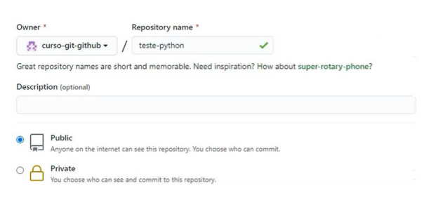

Primeiro passo será criar um repositório no GitHub, isso significa criar uma pasta que será criada para um determinado trabalho, por isso é importante que os nomes correspondam. Se você tiver uma pasta no seu computador que está no git e precisa enviar para uma pasta para o github, é importante que ela tenha o nome igual para não ter problemas no projeto. Abaixo está a imgaem como deve criar o repositório no github como na figura abaixo:
Após criar um repositório, precisamos criar uma pasta para enviar ao Github e dizer que esta pasta é um repositório. Basta digitar no terminal git init
Com este comando, estamos informando que a pasta do meu computador está vinculada ao repositório criado do GitHub
É para verificar se o git reconheceu as mudanças feitas no seu terminal. Se ocorrer algum erro, é possível fazer a validação e corrigir.
Se ao gerar um git status aparecer um "untracked file", quer dizer que o Git sabe que tem um arquivo lá, mas que esse arquivo não estpa versionado(adicionado) ainda.
Essa ação adiciona todos os arquivos abertos, ou poderá adicionar um só arquivo realizando um "git add "nome do arquivo". Quando gerar o git status, já não apresentará o erro.
É um comando que agrupa em um único pacore todas as adições e modificações que você fez
Os programadores geralmente usam um padrão para dizer oq ue foi feito naquelee commit. É viável padronizar sempre iniciando com um verbo "Cria código de leitura"